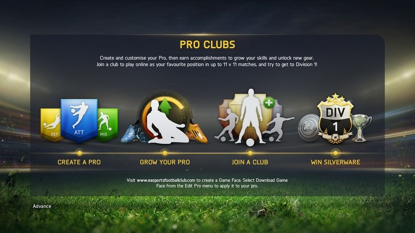
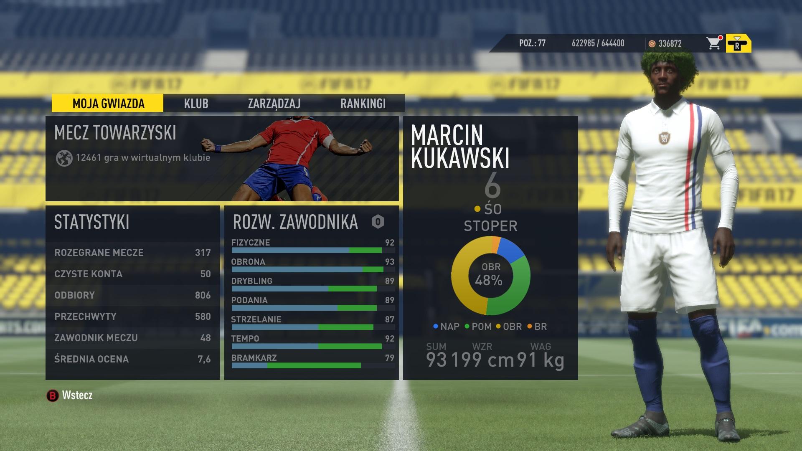
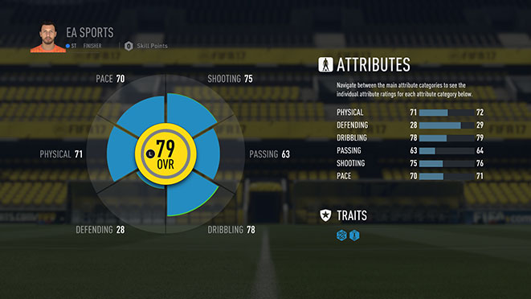
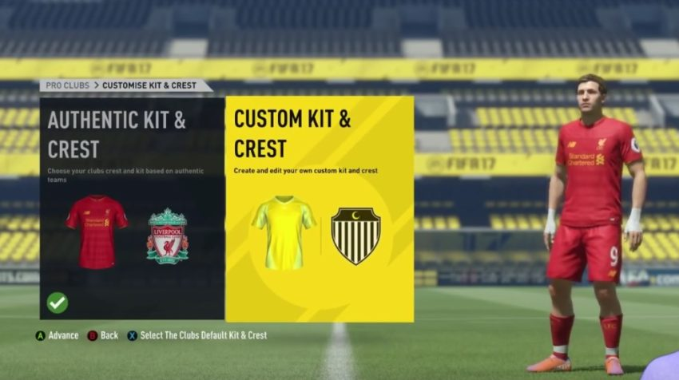
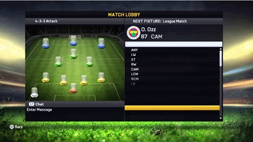

Pro Clubs
Jest to tryb, który mnie najbardziej zafascynował. Gracze, którzy spedzają przy tym trybie najwiecej czasu, nie potrzebują wiele, ani nie wymagają za dużo. Byleby móc dobrze spedzić czas ze znajomymi. Jednak EA Sports, według wielu graczy, także mnie, za bardzo skupił się na zarabianiu kasy w Ultimate Team i zaniedbał resztę trybów. Kariera, Podróż oraz UT to tryby na zasadzie zagraj kimś innym. Jedynym i nie powtarzalnym trybem, w którym tworzymy swoją postać jest Pro Clubs. Oczywiscie tworzac postac, w kazdym momencie, mozesz zmienic wyglad, pozycje, wzrost, czy tez swoje korki.  Wielu starych wyjadaczy przywiązuje się do swoich postaci, nie zmieniajac u nich charakterystycznych elementów.Ja od zawsze byłem Polska Panda z afro. Już od 3 lat tworze taką samą postać. Odkąd pamietam, wybierajac Pro Clubs witani jestesmy tym samym okienkiem Stwórz-Rozwijaj-Dołącz-Wygrywaj. Z pozoru latwa nawigacja, czesto gubi nowych graczy, dla ktorych pierwsze wrazenie jest najwazniejsze. Wskazowka dla nowych, chetnych doswiadczenia nowych znajomosci, nowych przygod, i dreszczyku emocji. Zostaly stworzone rozno jezyczne Ligi, zwiazane z gra, lecz nie wspolpracujace z EA Sports. Mozecie je znalesc w internecie, na facebooku. Wystarczy poszukac.  Pro clubs nie polega na graniu samemu, jesli tak robisz, wedlug mnie tracisz tylko czas. Gra zaczyna sie, kiedy w jedynascie osob mierzycie sie na inne kluby z taka sama iloscia. Dla tego pierwsze wrazenie w tym wypadku, jest zawsze mylace. W każdym rozegranym meczu zostajemy podsumowani,dostajemy ocene i punkty rozwoju, aby moc sie rozwijac. Z poczatku grajac slabo rozwinieta postacia, mozemy poczuc sie zle, ale z rozwojem poczujemy sie jak Messi, czy Ronaldo. Widelki rozwoju sa od 79 do 95. Rozwinieta postac osiaga sie do pol roku grania. Moge was zapewnic, ze jest roznica, miedzy 79, a 95 Overall.  W FIFIE 17 nastapila zmiana, ktora umozliwila stworzyc wlasne logo oraz stroje, jest to jakiegos rodzaju rozwoj. Jednak ja jestem rozczarowany, zakochałem sie w tym trybie od poczatku mojej przygody z fifa 10. W ciagu 8 lat nic sie nie zmienilo w grze. To gracze spowodowali, ze ta gra jest warta uwagi, dla siebie stworzyli ligę, w której rozgrywają sezon klub vs klub wyłaniajac zwyciezce, nawiazuja wiele przyjazni, ale takze wrogow. Powodują, ze ta gra jest pelna emocji. Wspolne spedzanie czasu, smianie sie i oczywiscie granie wlasnie to powoduje, ze tak wielu ludzi zasiada przed monitory. Dobry klub musi byc zgrany, czesto poszukuje nowych graczy. W klubie przewaznie jest 20 osob. Nie ktorzy siebie lubia, inni toleruja. Czesto dochodzi do nie porozumien, rozpadow i klotni, ale jeszcze wiecej do zartow, rozmow, wesolego spedzenia czasu. Moglbym opisywac cala ta otoczke w grze, w ciagu paru lat gracz sie przyzwyczaja i juz tego tak nie odczuwa, to co jest caly czas nowe, to wlasnie Ludzie. Nie zaleznie od tego ile spedzasz czasu przed Pro Clubs zawsze znajdziesz czas, aby sie umowic na granie. Jako ostatnie zdjecie dalem Lobby, w ktorym spedzicie najwiecej czasu, poniewaz to tutaj bedziecie wybierac pozycje i czekac na wyszukanie meczu. Do czasu, az w koncu EA Sports nie wymysli nowego sposobu laczenia. Byly to nie zapomniane przezycia, nie ktore zle, nie ktore dobre. Na zakonczenie mojego artykulu zachecam wszystkich do sprobowania swoich sil w tym pelnym emocji trybie.